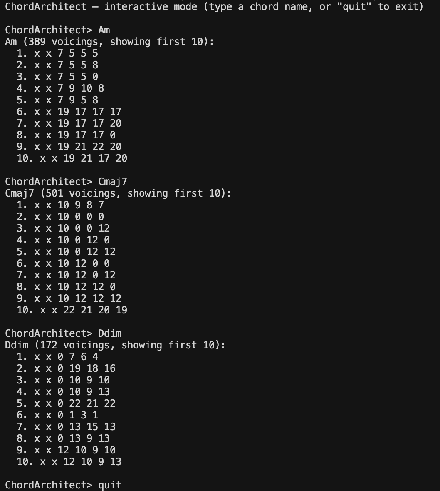
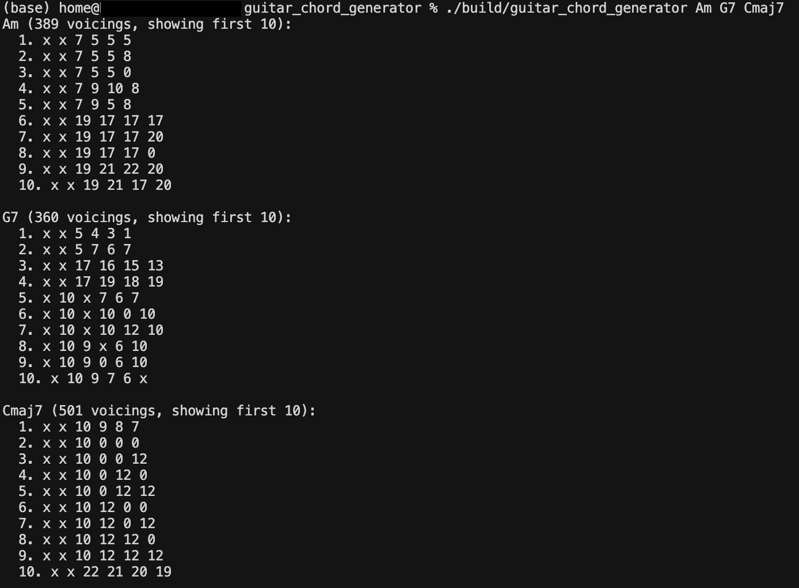

Chord Architect
C++, CMake
A C++ guitar chord generator that models a fretboard, computes voicings for any chord symbol (like Am, G7, Cmaj7) and stores them in a custom hash table for fast lookup. Supports standard and Drop D tuning, playability filtering, and both interactive and batch CLI modes.
Highlights
- Fretboard modeling: Represents a configurable guitar neck as a 2D grid with note/pitch lookups, supporting any tuning and fret count.
- Voicing generation: Computes playable fingerings for any chord symbol, filtering by fret span, minimum strings sounded, and bass-note requirements.
- Custom hash table: Caches generated voicings in a purpose-built hash table for O(1) repeated lookups with collision handling and automatic resizing.
- Interactive and batch modes: Query chords one at a time in a REPL or pass multiple chord names as arguments for quick batch output.

Interactive Mode

Batch Mode